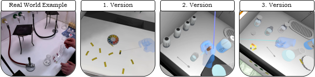

3 Verfahren und Rahmenmodelle
3.1 Fachliche Klärung und Didaktische Rekonstruktion
Allgemeine Einführung/Beschreibung
Während die fachliche Klärung v. a. als hermeneutisch-analytische Untersuchung eines Sach- bzw. Fachgegenstandes verstanden werden kann, so stellt sie nur einen Teil des Modells der Didaktischen Rekonstruktion (MDR) dar (Kattmann et al., 1997). Das Modell umfasst neben der fachlichen Klärung auch das Erfassen von Lernendenperspektiven sowie die didaktische Strukturierung als Verknüpfung der Ergebnisse aus fachlicher Klärung und Erhebung von Lernendenvorstellungen (ebd.).
Die fachliche Klärung beschreibt demnach eine inhaltsanalytisch geprägte Methode, fachwissenschaftliche Vorstellungen zu einer Thematik – immer vor dem Hintergrund einer Vermittlungsabsicht – zu erschließen und so Zielformulierungen für Lernende zu erarbeiten.
Die Erfassung von Lernendenperspektiven ist genuin empirisch geprägt und betrifft die Erhebung von Lernendenvorstellungen zu einem bestimmten Thema. Die Erhebung erfolgt, insofern nicht bereits umfassende Erkenntnisse zu Vorstellungen zu einem Thema vorliegen, in der Regel über qualitativ orientierte Fragebogen- und Interviewstudien.
Die didaktische Strukturierung stellt schließlich das verknüpfende Element zwischen fachlicher Klärung und der Erfassung von Lernendenperspektiven dar und lässt sich als Konstruktion von Unterricht verstehen, wobei Lernendenperspektiven als Gegebenheiten angesehen werden, von denen auszugehen ist und fachwissenschaftliche Vorstellungen den Zielbereich definieren.
Der gesamte Prozess ist aber nicht linear zu denken, sondern ist stets iterativ-wechselseitig. So kann die didaktische Strukturierung dazu führen, dass in der fachlichen Klärung mit Vermittlungsabsicht Unschärfen offengelegt werden, die nachgeschärft werden müssen (vgl. Abbildung 3.1).
Prägungen und zentrale Theorien
Das Modell der didaktischen Rekonstruktion fußt auf – bereits zum Zeitpunkt seiner Entwicklung – etablierten fachdidaktischen und allgemeindidaktischen Theorien der Unterrichtsplanung und der Curriculumsentwicklung. Die wichtigsten sind:
Didaktische Analyse nach Klafki (1969), insbesondere die didaktische Prägung der Sachanalyse vor dem Hintergrund einer Elementarisierung (vgl. fachliche Analyse mit Vermittlungsabsicht)
Das „Berliner Modell“ nach Heimann, Otto und Schulz (1969), insbesondere der Gedanke einer grundlegenden Interdependenz aller Variablen, die den Unterricht bestimmen
Darüber hinaus weist es Prägungen bzw. Parallelen durch bzw. zu folgenden Theorien auf:
Conceptual change: enge Anbindung an bzw. Übereinstimmung mit der conceptual change theory; didaktische Strukturierung ist darauf ausgelegt, Lernumgebungen zu schaffen, die Vorstellungsänderungen ermöglichen (d. h. Abgrenzung von einem Begriffsverständnis einer simplen Ersetzung von Vorstellungen)
Moderater Konstruktivismus (Gerstenmeier und Mandl, 1995)
Schwerpunktlegungen
Die Begründer des Modells beschreiben in der zentralen Publikation (Kattmann et al., 1997), dass es zwei mögliche Haupteinsatzszenarien (sozusagen zwei Schwerpunkte) gibt:
Die didaktische Rekonstruktion bereits bekannter, curricular verankerter Inhalte
Die didaktische Rekonstruktion neuer, bisher nicht unterrichteter Themenbereiche
Befunde zur Zielsetzung
Im Vergleich zu den Qualitätskriterien des Handbuchs ist die Wirkung von entwicklungsleitenden Verfahren und Modellen, wie der hier präsentierten didaktischen Rekonstruktion, prinzipiell nicht streng auf bestimmte Zielvariablen beschränkt. Vor dem Hintergrund der Vermittlungsabsicht und dem Schwerpunkt der Vorstellungsänderung durch didaktisch strukturierte Lernangebote stehen die letztgenannten häufig im Fokus einer mit der Didaktischen Rekonstruktion verbundenen Wirkforschung. Insgesamt finden sich folgende Variablen vermehrt in Studien:
Konzeptverständnis
in Form von (Fach)Wissen
in Form alternativer Vorstellungen
Motivation
Interesse
Berufsorientierung
Diesbezügliche Studien sind schwer zu bündeln, da sie eine enorme thematische Breite umfassen und fallbezogen sind. Literaturbeispiele werden im Folgenden genannt.
Literaturbeispiele zur Umsetzung
Umsetzungsbeispiel (eigene Projekte/Forschung)
In einem eigenen Projekt (ALICE) wurde das Modell der didaktischen Rekonstruktion genutzt, um (1) im Sinne der fachlichen Klärung das fachliche Wissen darzustellen, das es für den Unterrichtsgegenstand der Reaktionskinetik und des chemischen Gleichgewichts braucht und (2) in Verbindung mit gut dokumentierten Lernendenperspektiven (diese wurden nicht eigenständig empirisch erhoben) die didaktische Strukturierung einer digital gestützten Unterrichtseinheit zu realisieren. Im Sinne einer stets mitgedachten Vermittlungsabsicht kann bereits bei der fachlichen Klärung fachdidaktisches Wissen einfließen, das bspw. die Sequenzierung von Inhalten betrifft. Entsprechend wurden nach dem o. g. Schwerpunkt (1) bereits bekannte, curricular verankerte Inhalte didaktisch rekonstruiert. Ein Überblick findet sich in Lossjew & Bernholt (2025).
Lessons learned
Zur Erstellung der Lernumgebung wurden verschiedene Expert:innen des Chemieunterrichts sowie eine Pilotierungsklasse einbezogen. Es zeigte sich jedoch im Projektverlauf, dass die vielschichtigen Perspektiven aller teilnehmenden Lehrkräfte und ihrer Lernenden nur bedingt durch diese Maßnahmen antizipiert werden konnten. Für einen gelingenden Einsatz des Konzeptes in der Entwicklung für die Schule ist insbesondere das Einbeziehen von Lehrenden zielführend. Neben der fachlichen Klärung und den Lernendenperspektiven kann gewinnbringend die Lehrendenperspektive gestellt werden. Hierbei können sich unterschiedliche ko-konstruktive Formate eignen, wie beispielsweise Co-Design oder Design-Based Research, die letztlich auch den iterativ-wechselseitigen Anspruch des Modells der Didaktischen Rekonstruktion abbilden.
Umsetzungsfacetten und Umsetzung im Prozess
Die systematische Umsetzung zeichnet sich explizit durch die skizzierte iterativ-wechselseitige Bearbeitung der oben beschriebenen drei Facetten des fachdidaktischen Tripletts aus. Das Dokumentieren des Entwicklungsprozesses kann dabei als Indikator für eine systematische Umsetzung verstanden werden und gleichzeitig Forschungsergebnisse generieren. Darüber hinaus können Prozessergebnisse auch weitergehend evaluiert werden – z. B. durch Fachexpert:innen (d. h. Fachwissenschaftler:innen) und fachdidaktische Expert:innen, aber auch durch Lehrkräfte und Lernende. Je nach Fragestellung und Ziel können die genannten Stakeholder unterschiedlich stark eingebunden werden.
Ansätze zur Absicherung der Umsetzung (Implementation-Check)
Mit Blick auf das Triplett können unterschiedliche Methoden der Absicherung gewählt werden:
Fachliche Klärung: Design-Based-Research (mit evaluativen Elementen) durch Fachexpert:innen und fachdidaktische Expert:innen, Gütekriterien qualitativer Forschung bei materialanalytischem Vorgehen (vgl. hermeneutisch-analytisches Vorgehen)
Erhebung von Lernendenperspektiven: Je nach Umsetzung der Erfassung/des Forschungsstandes: Gütekriterien qualitativer (z. B. dokumentatorische Transparenz des Forschungs- und Auswertungsvorgehens, Berechnung der intersubjektiven Übereinstimmung) oder quantitativer (z. B. psychometrische Gütekriterien zur Testreliabilität) Forschung
Didaktische Strukturierung insgesamt: Strukturindikatoren in der Dokumentation des iterativen Prozesses durch Anwender:innen, aber auch in der Dokumentenanalyse erstellter Produkte, Design-Based-Research (mit evaluativen Elementen)
Ansätze zur Untersuchung der Zielsetzung (Effect-Check)
Wie bereits angedeutet, kann die anvisierte Wirkforschung mit Bezug zu Materialien, die einer Didaktischen Rekonstruktion entstammen, sehr breitgefächert sein. Dies liegt u. a. auch daran, dass aus diesem Prozess in der Regel nicht ein einzelnes Material, sondern vielmehr ein Pool an Materialien entsteht. Diese Materialien können dabei auch unterschiedliche Qualitätskriterien fokussieren. Es sind demnach verschiedene Szenarien denkbar. Einige Beispiele sind im Folgenden beschrieben:
Interventionsdesigns mit Vergleichsgruppe: Auf Basis neuer (ggf. sogar selbst erhobener) Kenntnisse zu Lernendenperspektiven zu einem bestimmten Fachgegenstand wird dieser neuartig didaktisch strukturiert, um die Lernendenperspektiven besser zu adressieren. In einem Interventions-Kontrollgruppen-Design kann untersucht werden, inwieweit das Aufgreifen dieser Perspektiven bspw. zu einem erhöhten Interesse im Vergleich zum „bewährten“ Unterricht führt.
Prä/Post-Designs: In einem Prä-Post-Vergleich in einer verbundenen Stichprobe kann untersucht werden, inwiefern das didaktisch strukturierte Lernangebot zu einer Veränderung von alternativen Vorstellungen führt. Aus dem Veränderungsmuster können Hinweise auf die Wirksamkeit der (materialgestützten) Lernumgebung abgeleitet werden. Überraschende bzw. nicht-intendierte Ergebnisse können eine iterativ-wechselseitige Überarbeitung anstoßen.
Qualitative Erfassung der Materialnutzung: Erstelltes Material, das einem didaktisch rekonstruktiven Prozess entstammt, kann hinsichtlich seiner Nutzung durch Lernende untersucht werden und dabei beispielhaft folgende Fragestellungen beantworten: Welche Elemente erregen Aufmerksamkeit und unterstützen den Lernprozess in einer intendierten Weise? Welche Elemente führen zu (Verständnis)Schwierigkeiten, sind irreführend oder sogar überflüssig? Der effect check ist hierbei weniger streng kausal, sondern vielmehr als empirisch gestützte Rückmeldung zur Funktionalität und Wirkung der didaktischen Strukturierung zu verstehen.
Quellen
3.2 Universal Design for Learning
Text
3.3 Design-Based Research
Allgemeine Einführung/Beschreibung
Design-Based Research (DBR) ist ein Studiendesign, das Design- und wissenschaftliche Methoden integriert, um in realen Lernkontexten (Barab & Squire, 2004) gleichzeitig 1) praxistaugliche Interventionen und 2) theoretisch fundiertes Wissen zu generieren (Anderson & Shattuck, 2012; Easterday et al., 2014). Ann Brown (1992), die als Begründerin des DBR gilt, schrieb: „an effective intervention should be able to migrate from our experimental classroom to average classrooms operated by and for average students and teachers, supported by realistic technological and personal support“ (Brown, 1992) und greift damit ein zentrales Problem der Bildungsforschung auf: Viele Interventionen werden für experimentelle Forschungszwecke konzeptioniert und entwickelt, aber können den Anforderungen regulärer Klassenzimmer nicht standhalten. Durch den iterativen Ansatz unter Einbezug verschiedener Perspektiven sollen Interventionen zur langfristigen Implementation entwickelt werden.
Charakteristisch sind iterative Zyklen aus den drei Phasen (siehe Abbildung 3.2) – Design, Analyse und Evaluation (Mundy et al., 2024) – bzw. sechs Phasen – focus, understand, define, conceive, build, test (Easterday et al., 2014). In der Evaluations- bzw. Testphase werden verschiedene Perspektiven einbezogen, um die Intervention zu verbessern und theoretisches Verständnis zu gewinnen (Mundy et al., 2024). Zur Auswertung der Ergebnisse werden häufig mixed methods verwendet (Anderson & Shattuck, 2012).
Befunde zur Zielsetzung
DBR setzt sich einerseits das Ziel, praxistaugliche Interventionen, aber auch theoretisch fundiertes Verständnis zu generieren, um über den Einzelfall hinaus auf ähnliche Probleme angewandt werden zu können (Easterday et al., 2014). Dabei adressiert DBR die theory-practice gap, um Interventionen für die Praxis zu schaffen, die auch langfristig eingesetzt werden können. In ihrem Dekadenrückblick schreiben Anderson & Shattuck (2012) über die Herausforderungen von DBR, aber auch über die zunehmende Anzahl von Publikationen unter dem Schlagwort.
Umsetzungsbeispiel (eigene Projekte/Forschung)

Im Projekt DiVEx wurde ein immersives Virtual-Reality-Chemielabor (iVRCL) in einer DBR-Studie entwickelt (Mecklenburg & Lenzer, in prep.). Dabei wurden die unterschiedlichen Perspektiven von Studierenden, Fachchemiker:innen, Chemiedidaktiker:innen und Noviz:innen einbezogen. Die technische Entwicklung der VR-Umgebung erfolgte in der Unity Game Engine durch externe Softwareentwickler:innen. Für die DBR-Studie wurde ein Storyboard – basierend auf vorher festgelegten Designkriterien (Echeverri-Jimenez & Oliver-Hoyo, 2024) – mit allen erforderlichen Schritten in dem virtuellen Labor erstellt (127 Schritte). Anschließend wurden Videos zu den Versuchen aufgenommen, Bilder von dem Labor gemacht, Anleitungstexte geschrieben und Quizze erstellt. Für das Design (Schritt a in Abbildung 3.2) wurde alles an die externen Softwareentwickler:innen übergeben, die eine erste Version erstellten. Für die Evaluation (Schritt b) wurde die erste Version von Proband:innen mit unterschiedlichen Perspektiven getestet. Dazu wurden Screencasts erstellt, welche anschließend mit den Proband:innen angeschaut und durch diese kommentiert wurden. Die Ergebnisse wurden in einem Beobachtungsbogen, basierend auf dem Storyboard, festgehalten. Für die Analyse (Schritt c) wurden die Beobachtungen zusammengefasst und mittels qualitativer Inhaltsanalyse (Mayring, 2010), basierend auf den Designkriterien, ausgewertet. Zusätzlich wurden kurze Videosequenzen mit Problemen erstellt und gemeinsam mit der Zusammenfassung der Änderungen (kommentiertes Storyboard) an das Entwicklungsteam übergeben, woraus eine weitere Version erstellt wurde.
Neben den Interviews wurden quantitativ die kognitive Belastung (Krieglstein et al., 2023), Präsenzerleben (Hartmann et al., 2016) und Erfahrung im VR-Labor (Reeves et al., 2021) erfasst. Aufgrund der geringen Stichprobe und der Veränderung der VR-Umgebung über die Iterationen konnten diese Daten am Ende nicht ausgewertet werden.
| Version of iVRCL | Participants’ feedback | Commented storyboard | ||
|---|---|---|---|---|
| 1 | F | Virtual lab with cupboards, fume hood, glass rod, beaker, pH-paper | Realistic environment; watch glass missing; no liquids visible | Add a watch glass and shaders for liquids |
| I | One-button interactions with glass rod and pH-paper (steps 5+6) | Interactions feel constrained and sometimes complicated | Extend interaction, add transfer of liquid and collect base | |
| G | Basic audio and text instructions | Instructions sometimes unclear; limited feedback | Improve guidance; add pH-paper with different colors (visual feedback) | |
| 2 | F | Simple bottles for chemicals; filtration stand in fume hood | Bottles resemble solid containers; filtration stand obstructed fume hood; insufficient space | Replace with liquid bottles; automatic removal of unused equipment |
| I | One-button interactions with pipette for liquid transfer (step 2) | One-button handling with pipette is clumsy | Two-button interactions for grabbable objects | |
| G | Improved guidance with some highlighted objects | More instructions and guidance towards interactions needed | Add flowchart; video VR controller usage | |
| 3 | F | Liquid bottles; watch glass; automatic equipment removal | Realistic environment; no further issues | |
| I | Two-button interactions for pH-measurement (steps 1 – 8) | Two-button interactions occasionally unclear, but functional | Add videos and introduction outside of iVRCL | |
| G | Flowchart with step-by-step instructions; videos for VR controller | More guidance (highlighting of objects) for the interactions | Scaffolding system with fading highlights of objects; revised guidance and quiz |
Umsetzungsfacetten
Die systematische Umsetzung zeichnet sich in erster Linie durch den hohen Praxisbezug aus. Ziel ist es, Interventionen zu entwickeln, die auf die Bedürfnisse der Zielgruppe zugeschnitten sind und eine langfristige Implementation in die Praxis ermöglichen. Zentral ist dafür der Einbezug verschiedener Perspektiven – von Lernenden, Lehrenden, Forschenden und weiteren Stakeholdern wie Softwareentwickler:innen (Anderson & Shattuck, 2012). Dieser kooperative Ansatz unterscheidet DBR von Ansätzen, in denen Interventionen nur untersucht, aber nicht langfristig implementiert werden (Anderson & Shattuck, 2012).
Dazu werden die Versionen früh und niedrigschwellig evaluiert (Easterday et al., 2014; Mundy et al., 2024). Mittels qualitativer Methoden wie Interviews, Bildschirmaufzeichnungen und Inhaltsanalyse (Mayring, 2010) können die Perspektiven erfasst und die Usability der Intervention getestet werden. Mit quantitativen Methoden kann die Wirkung der Intervention anschließend überprüft werden (Anderson & Shattuck, 2012; Easterday et al., 2014).
Dabei wird die Komplexität der realen Lernsituationen (z. B. Klassenzimmer, Labor) nicht reduziert, sondern als Teil einer Feldstudie berücksichtigt. Des Weiteren werden technische und organisatorische Herausforderungen und deren Lösungen für eine langfristige Implementation und möglichen Transfer an andere Institutionen dokumentiert.
Umsetzung im Prozess
Die Entwicklung von Interventionen als DBR ist aufwendig. Der Einbezug verschiedener Perspektiven, die Auswertung und Kommunikation benötigen viel Zeit. Insbesondere bei größeren Interventionen, die viel Expertise in unterschiedlichen Bereichen erfordern (z. B. bei digitalen Interventionen), lohnt sich aber das iterative Vorgehen, um eine lernwirksame Intervention zu entwickeln und die Perspektiven zu berücksichtigen.
Bei unserer Umsetzung wurde anfänglich das Storyboard basierend auf den Lernzielen und -inhalten entwickelt. Damit wurden die Videos erstellt, die als Grundlage für die technischen Entwickler:innen – ohne naturwissenschaftliche Kenntnisse – wichtig waren, um die Interaktionen zu implementieren. In der Designphase wurden literaturbasiert Designkriterien diskutiert und festgelegt (Echeverri-Jimenez & Oliver-Hoyo, 2024). Das Storyboard wurde in der Evaluationsphase als Grundlage für die Interviews genutzt, die später mittels qualitativer Inhaltsanalyse ausgewertet wurden. Die Kategorien wurden basierend auf den vorher festgelegten Designkriterien ausgewählt und anschließend für die Analyse ausgewertet. Das Storyboard war für die Kommunikation zwischen den technischen Entwickler:innen und uns unerlässlich.